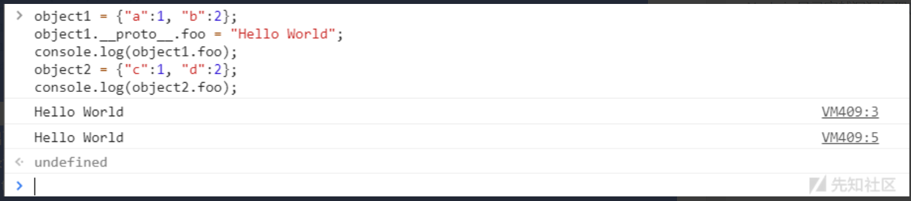

JavaScript原型链污染学习
Last Update:
Word Count:
Read Time:
0x01 前言
最近新生赛老是碰到JavaScript原型链题目，我纳闷儿呢，这玩意儿也算新生难度了？？？┭┮﹏┭┮终究是我太菜了。话不多说，直接开卷！！！以下几乎都是转载的参考文章，请见谅┭┮﹏┭┮
0x02 危险函数所导致的命令执行
2.1 eval()
eval() 函数可计算某个字符串，并执行其中的的 JavaScript 代码。和PHP中eval函数一样，如果传递到函数中的参数可控并且没有经过严格的过滤时，就会导致漏洞的出现。
简单例子：main.js
1 | |
漏洞利用：
Node.js中的chile_process.exec调用的是/bash.sh，它是一个bash解释器，可以执行系统命令。在eval函数的参数中可以构造require('child_process').exec('');来进行调用。
弹计算器(windows)：
1 | |
读取文件(linux)：
1 | |
反弹shell(linux)：
1 | |
如果上下文中没有require(类似于Code-Breaking 2018 Thejs)，则可以使用global.process.mainModule.constructor._load('child_process').exec('calc')来执行命令
paypal一个命令执行的例子：
demo.paypal.com] Node.js code injection (RCE)
(使用数组绕过过滤，再调用child_process执行命令)
2.2 类似命令
间隔两秒执行函数：
- setInteval(some_function, 2000)
两秒后执行函数：
- setTimeout(some_function, 2000);
some_function处就类似于eval函数的参数
输出HelloWorld：
- Function(“console.log(‘HelloWolrd’)”)()
类似于php中的create_function
以上都可以导致命令执行
0x03 JavaScript类
3.1 类的声明
下面是一个基本的 JavaScript 类的声明
1 | |
然后我们创建类的实例
1 | |
基于我们在其它编程语言的习惯，上面的代码非常易于理解
上述代码中，num称为类Calculator的属性，applyAdd、applySub称为类Calculator的方法，add、sub称为类Calculator的静态方法
在 ES6 之前，JavaScript 并没有提供 class 语法，类的功能是基于函数（function）来实现的，如下
1 | |
现在我们注意下面几个细节
- 用函数实现时，
function Calculator的内容（参数、函数体）与用类实现时的constructor相同 - 用函数实现时，方法
applyAdd、applySub声明在Calculator.prototype层中 - 用函数实现时，静态方法
add、sub直接声明在Calculator层中
3.2 new 做了什么
可以说 JavaScript 的任何一个对象都是一个 Object，不论是Number``String``Array等，它们都具有一种 JSON 结构（注意，JavaScript 中含有JSON类，此处的 JSON 泛指一种数据结构，与JSON类无关），我们称为“对象”，为了与类创建的实例（也称为“对象”）作区分，我们称类创建的实例为“实例”，“实例”也是“对象”
也就是说，函数Calculator本身就具有一种 JSON 结构，它具有它的 JSON 属性、JSON 方法
我们把注意力放在let calc = new Calculator(1)这一行上
事实上，这两种实现方法（用class语法和用函数实现）的Calculator最终具有相同的 JSON 结构，其中，基于函数的实现更接近 JavaScript 的本真逻辑，而class更像是一种语法糖
**注意：**此处不要将两种实现方式的Calculator分别命名成Calculator1和Calculator2，然后通过Calculator1 == Calculator2或者Calculator1 === Calculator2去比较，它将永远返回false，因为两者的地址是不一样的，正如[] == []和({}) == ({})的返回值也是false一样
那么，根据我们所注意到的几个细节，我们猜测：
- 进行 new 操作时，JavaScript 创建了一个新的 JSON 结构，这个结构继承自
Calculator的prototype属性——这一过程引入了方法 - 随后，以这个新创建的 JSON 结构为
this，传递参数num=1并运行构造器constructor中的内容——这一过程引入了属性 - 至于静态方法则很好理解，我们调用静态方法写的是
Calculator.add``Calculator.sub，那么这些静态方法也自然引入于Calculator的 JSON 结构本身之中
实例创建后，为了追溯这一过程，新创建的实例的 JSON 结构会带有constructor属性，指向创建它的构造器，在此处为Calculator（函数）；带有__proto__属性，指向它的原型，也就是它继承过来的地方，在此处为Calculator.prototype
接下来我们进行验证
我们注意到，基于函数实现的写法中，new Calculator(1)的Calculator本身是一个函数，事实上它就是constructor函数本身
1 | |
即使用class语法创建，我们也能够看到方法位于Calculator的prototype之中
1 | |
结合上面的结论，显然，下面表达式的运行结果也是true
1 | |
接下来我们验证calc下面的__proto__，它指向了它的原型
1 | |
我们看到，new 的过程实际上就是根据类创建一个 JavaScript 对象（JSON 结构）的过程，它具有以下步骤：
- 为实例添加方法：以类的
prototype作为原型“复制”出一个新的对象（JSON 结构） - 为实例添加属性、进行初始化操作：运行类的构造器
constructor - 为实例“添加”
constructor和__proto__属性，分别指向创建它时的构造器和原型
事实上，上述的描述并不准确，我们将在稍后予以纠正
3.3 构造器 constructor
刚才的 new 操作完全可以写成
1 | |
这意味着，创建一个类的含义就是创建了一个构造器函数，创建一个实例的含义就是在继承的基础上运行了这个构造器函数
为了确保继承过程顺利进行，这个构造器函数必须含有以下特征
- 包含
prototype属性
而在 JavaScript 中，任意函数都默认具有prototype属性，因此，任意函数都符合一个构造器的标准，任意函数都是一个构造器，可用于生成类实例
1 | |
以上代码并不会报错
在 JavaScript 中，继承这个概念贯彻在许多操作中，每一个新的 JSON 结构的诞生，都进行了类似 new 的逻辑，因此，任何一个对象（除了null）都具有constructor属性，包括构造器本身
构造器本身是一个函数，当我们循环访问constructor时将得到 JavaScript 预定义的构造器Function，而Function的构造器仍然是它本身
1 | |
以上表达式将返回true
我们可以总结出如下现象
- 构造器链的尽头是
Function Function的构造器是Function本身
下面这张图更加地趋近本质，可以稍后再来体悟
3.4 原型和继承
当我们谈论 JavaScript 的原型，实际上是在谈论对象（JSON 结构）之间的特殊关系，有继承就有原型，有原型就有继承
原型的定义大致可以描述为：A和B是两个 JSON 结构，B继承于A，具有A的全部内容，那么称A就是B的原型
在 JavaScript 中，一个 JSON 结构就可以称为是一个具体的对象，甚至包括Number``String
null是一个特殊的对象，它表示空，如果把对象之间的继承关系画一个遗传系谱图，那么null就是这张图上最原始的祖先
我们具有构造器函数Calculator，它也是一个 JSON 结构（对象），具有一个属性prototype，我们可以将这个属性理解为创建实例时的“模板”，当创建实例时，实例会继承这个“模板”的全部内容
当我们单独说谁是原型时，其实并没有意义，Calculator的prototype不是Calcualtor的原型，而是Calculator所要创建的实例（calc）的原型，事实上，这里命名为prototype（英文译为“原型”）造成了重大的歧义，经常对初学者甚至从业多年的程序员造成巨大困扰，为了方便表述、避免歧义，我们之后将把构造器的prototype称为构造器的“原型模板”
构造器Calculator创建出实例calc后，calc含有一个属性__proto__，这个属性即为calc的原型
刚才我们也提到Calculator.prototype也是calc的原型，所以它们两个是等价的，下面的表达式将返回true
1 | |
我们可以用一张图描述这种关系，下图中的prototype和__proto__在内存中具有完全相同的地址，只是它们所隶属的 JSON 结构不一样
当访问calc下的applyAdd，如果calc自己没有applyAdd，则会从它的原型中去查找，从而实现继承
几乎所有 JavaScript 中的对象都有原型，在 JavaScript 中，可以访问任何对象的__proto__属性查看它的原型
另一方面，有原型就有继承，有继承就有相应的构造器，我们可以访问任何对象的constructor属性查看它的构造器
3.5 原型对象 prototype 和 proto
首先我们需要分辨清楚prototype和__proto__的区别，以Calculator为例，这个构造器函数的原型并不是Calculator.prototype，而是Calculator.__proto__，calc的原型是calc.__proto__等于Calculator.prototype
每一个实例都由它所对应的构造器所创建，因此每一个实例都具有constructor和__proto__属性，实例的constructor.prototype的地址与实例的__proto__一致
但值得注意的是，当我们循环访问__proto__时，最终将指向null，而当我们循环访问constructor.prototype时，最终将会给出相同的结果
这是因为一个构造器的“原型模板”的构造器就是构造器本身
1 | |
以上表达式都将返回true
这种“循环自引用”的逻辑或许会有些难以理解和记忆，但它这么设计是有它的意义所在的
如果我们将prototype的constructor修改成其它的将会发生什么？例如
1 | |
然后我们访问calc.constructor，它将返回Number构造器
让我们查看calc的 JSON 结构
**注意：**这里的<prototype>（在chromium内核的浏览器可能显示的是[[Prototype]]），其实就是calc的原型calc.__proto__亦即Calculator.prototype
因此，calc的contructor属性并不是被添加上去的，而是继承自prototype的，这是对先前“new 做了什么”的总结的第一个修正，这也说明了为什么一个构造器的prototype.constructor默认指向这个构造器本身
与constructor.prototype不同的是，__proto__将直接指向当前的 JSON 结构继承自哪里
1 | |
运行结果如下
对于第一条运行结果是显然的
对于第三条运行结果，正如我们刚才所提到的，prototype的constructor将指向calc.constructor，从而形成一种“循环自引用”
对于第二条运行结果，我们观察calc.__proto__.__proto__的内容
我们注意到，calc.__proto__就是Calculator.prototype，它是一个 JSON 结构，这个 JSON 结构的原型应当是一个 JavaScript 预定义的构造器Object创建的
1 | |
至于为什么calc.__proto__（即Calculator.prototype）的constructor属性不默认指向Object以追求统一，这或许就是先前提到的 JavaScript 的内在逻辑为了继承方便的特性吧
现在，我们进行第二个对先前“new 做了什么”的总结的纠错
我们检查calc这个对象（JSON 结构）本身的层级是否具有__proto__属性
1 | |
可见其实calc本身并不具有__proto__属性
在 JavaScript 中，当我们访问一个对象的A属性，如果当前对象的 JSON 结构中找不到A属性，JavaScript 会从它的原型中去寻找
由于这个特性的存在，如果它的原型（也是一个 JSON 结构）中找不到，会从它的原型的原型中去找，直到原型为null也没有找到则返回undefined
**注意：**事实上，“原型”这个概念指的是程序运行的内在逻辑，而不是__proto__这些属性，是不容外部修改的，换句话说，__proto__默认指向了原型的地址，而并不是说改变__proto__则改变了原型
这一点可以通过修改Object.prototype.a = 1，然后运行Object.defineProperty(calc, '__proto__', { value: 123 })使得calc.__proto__的值变为123，然后访问calc.a进行验证，会发现它返回的结果是1
我们追溯它的原型
1 | |
第一行返回了false，calc.__proto__即Calculator.prototype，它的原型的 JSON 结构本身也不具有__proto__属性
第二行返回了true，我们再次打印calc.__proto__.__proto__的结果
这个结果和Object.prototype一致
我们可以从Object.prototype的 JSON 结构中看到，它含有一个__proto__属性，但是它是一个 Getter，访问__proto__属性将运行这个 Getter 函数，将这个函数的返回值作为__proto__属性的值
所谓 Getter，就是指一个属性的值与一个函数相绑定，访问这个属性，它的值会通过一个函数动态获取，这个函数称为这个属性的 Getter 函数
相应的，还有 Setter 这一概念，当通过赋值语句=对这个属性进行赋值时，实际上是以=后面的值为函数的参数调用了它的 Setter 函数
对于__proto__这一 Getter，它的逻辑在 JavaScript 解释器的代码中得到定义，而并不是 JavaScript 语言本身能够定义的
我们可以通过运行如下代码判断一个它是不是一个 Getter
1 | |
运行结果如下
显然__proto__的值是通过get: __proto__()动态获取的
我们运行Object.getOwnPropertyDescriptor(Object.prototype, '__proto__').get.call(calc)（意思是以calc为这个 Getter 的 this 指针运行这个 Getter 函数）的结果和cal.__proto__一样
因此，calc中的__proto__实际上是通过 JavaScript 中层层向原型访问的机制寻找到的，它最终通过原型链指向了Object.prototype中的__proto__这一带有 Getter 的属性
我们可以通过下面的代码将Object.prototype的__proto__修改为一个确定的、不带有 Getter 的值
1 | |
然后我们会发现众多对象的__proto__都变成了123，包括calc和Calculator.prototype
为了探查calc继承的逻辑，我们刷新一下网页或者重置一下 JavaScript 环境，重新创建Calculator对象和calc实例，运行如下代码对Calculator.prototype的__proto__进行修改
1 | |
然后访问calc.__proto__，会发现它返回了123
由此我们对“new 做了什么”进行第二次修正：实际上__proto__属性也不是被添加上去的，而是继承自构造器的prototype属性
再一次刷新网页或者重置 JavaScript 环境，查看Object.prototype的__proto__值
1 | |
综合上述探索和测试，我们得到如下结论
- 一个构造器的
prototype的构造器指向这个构造器本身 - 访问
__proto__会通过原型链继承Object.prototype.__proto__的结果 __proto__的尽头是null- 在默认情况下，一个对象（JSON 结构）的原型可通过它的
__proto__属性反映
3.6 继承与原型链：new 到底做了什么
通过上面的探索，我们可以给出“new 做了什么”的最终答案：
new 的过程实际上就是根据构造器的prototype属性创建一个 JavaScript 对象（JSON 结构）的过程，它具有以下步骤：
- 创建一个空的 JSON 结构
- 以这个新的 JSON 结构为 this，运行类的构造器
constructor - 在程序内部将这个 JSON 结构的原型指向构造器的
prototype - 返回这个新的 JSON 结构
实例的属性由constructor函数对this添加属性而直接添加于实例（新的 JSON 结构）之下，属性是这个实例独有的，由相同构造器创建的其它实例具有它们独有的属性，互不影响
实例的方法继承自构造器的prototype，改变构造器中的prototype的内容将影响到所有由这个构造器创建的实例
当我们访问这个实例的constructor属性时，JavaScript 并没有在这个实例的 JSON 结构中找到对应的属性，转而向它的原型（构造器的prototype）寻找，并找到了constructor属性，然后返回它的值
当我们访问这个实例的__proto__属性时，JavaScript 并没有在这个实例的的 JSON 结构中找到对应的属性，转而向它的原型（构造器的prototype）寻找，在它的原型中也没有找到，转而继续向它的原型的原型（Object.prototype）寻找，并找到了prototype属性，并返回它的值，由于它是一个 Getter，所以 JavaScript 以所访问的实例为 this 返回了这个 Getter 函数的返回值
我们访问实例的constructor和__proto__属性的过程反映了 JavaScript 中的一个重要概念：原型
3.7 原型链污染
原型链指的是由多个__proto__连在一起而形成的链式原型访问，如calc.__proto__.__proto__
在默认情况下，一个对象（JSON 结构）的__proto__所指向的地址与对象原型的地址是一致的
由 JavaScript 的原型链查找建立起来的秩序使得构造器和实例处于一种稳定的关系之中，虽然我们通过Object.defineProperty(obj, '__proto__', { value })的方式改变一个对象的__proto__属性并不能改变这个对象的原型，但是我们却能够通过__proto__访问到它的原型
如果我们对它的原型进行一些修改，就能达到改变程序逻辑的目的，从而触发一些漏洞，这种人为通过原型链修改原型的行为成为原型链污染，是一种常见的攻击手段
对于大多数非 JavaScript 预定义的对象，可以通过__proto__或者constructor.prototype访问它的原型，对它原型下的属性进行修改可以造成原型链污染
emmm总的来说，代码基础有点差，从2.5之后看的就有点困难了，因此我再结合p神的看一遍吧。。。。
0x04 深入理解 JavaScript Prototype 污染攻击
4.1 prototype和__proto__分别是什么
JavaScript中，我们如果要定义一个类，需要以定义“构造函数”的方式来定义：
1 | |
Foo函数的内容，就是Foo类的构造函数，而this.bar就是Foo类的一个属性。
为了简化编写JavaScript代码，ECMAScript 6后增加了
class语法，但class其实只是一个语法糖。
一个类必然有一些方法，类似属性this.bar，我们也可以将方法定义在构造函数内部：
1 | |
但这样写有一个问题，就是每当我们新建一个Foo对象时，this.show = function...就会执行一次，这个show方法实际上是绑定在对象上的，而不是绑定在“类”中。
我希望在创建类的时候只创建一次show方法，这时候就则需要使用原型（prototype）了：
1 | |
我们可以认为原型prototype是类Foo的一个属性，而所有用Foo类实例化的对象，都将拥有这个属性中的所有内容，包括变量和方法。比如上图中的foo对象，其天生就具有foo.show()方法。
我们可以通过Foo.prototype来访问Foo类的原型，但Foo实例化出来的对象，是不能通过prototype访问原型的。这时候，就该__proto__登场了。
一个Foo类实例化出来的foo对象，可以通过foo.__proto__属性来访问Foo类的原型，也就是说：
1 | |
所以，总结一下：
prototype是一个类的属性，所有类对象在实例化的时候将会拥有prototype中的属性和方法- 一个对象的
__proto__属性，指向这个对象所在的类的prototype属性
4.2 JavaScript原型链继承
所有类对象在实例化的时候将会拥有prototype中的属性和方法，这个特性被用来实现JavaScript中的继承机制。
比如：
1 | |
Son类继承了Father类的last_name属性，最后输出的是Name: Melania Trump。
总结一下，对于对象son，在调用son.last_name的时候，实际上JavaScript引擎会进行如下操作：
- 在对象son中寻找last_name
- 如果找不到，则在
son.__proto__中寻找last_name - 如果仍然找不到，则继续在
son.__proto__.__proto__中寻找last_name - 依次寻找，直到找到
null结束。比如，Object.prototype的__proto__就是null
JavaScript的这个查找的机制，被运用在面向对象的继承中，被称作prototype继承链。
以上就是最基础的JavaScript面向对象编程，我们并不深入研究更细节的内容，只要牢记以下几点即可：
- 每个构造函数(constructor)都有一个原型对象(prototype)
- 对象的
__proto__属性，指向类的原型对象prototype - JavaScript使用prototype链实现继承机制
4.3 原型链污染是什么
第一章中说到，foo.__proto__指向的是Foo类的prototype。那么，如果我们修改了foo.__proto__中的值，是不是就可以修改Foo类呢？
做个简单的实验：
1 | |
最后，虽然zoo是一个空对象{}，但zoo.bar的结果居然是2：
原因也显而易见：因为前面我们修改了foo的原型foo.__proto__.bar = 2，而foo是一个Object类的实例，所以实际上是修改了Object这个类，给这个类增加了一个属性bar，值为2。
后来，我们又用Object类创建了一个zoo对象let zoo = {}，zoo对象自然也有一个bar属性了。
那么，在一个应用中，如果攻击者控制并修改了一个对象的原型，那么将可以影响所有和这个对象来自同一个类、父祖类的对象。这种攻击方式就是原型链污染。
4.4 哪些情况下原型链会被污染
在实际应用中，哪些情况下可能存在原型链能被攻击者修改的情况呢？
我们思考一下，哪些情况下我们可以设置__proto__的值呢？其实找到能够控制数组（对象）的“键名”的操作即可：
- 对象merge–合并
- 对象clone（其实内核就是将待操作的对象merge到一个空对象中）
以对象merge为例，我们想象一个简单的merge函数：
1 | |
在合并的过程中，存在赋值的操作target[key] = source[key]，那么，这个key如果是__proto__，是不是就可以原型链污染呢？
我们用如下代码实验一下：
1 | |
结果是，合并虽然成功了，但原型链没有被污染：
这是因为，我们用JavaScript创建o2的过程（let o2 = {a: 1, "__proto__": {b: 2}}）中，__proto__已经代表o2的原型了，此时遍历o2的所有键名，你拿到的是[a, b]，__proto__并不是一个key，自然也不会修改Object的原型。
那么，如何让__proto__被认为是一个键名呢？
我们将代码改成如下：
1 | |
可见，新建的o3对象，也存在b属性，说明Object已经被污染：
这是因为，JSON解析的情况下，__proto__会被认为是一个真正的“键名”，而不代表“原型”，所以在遍历o2的时候会存在这个键。
merge操作是最常见可能控制键名的操作，也最能被原型链攻击，很多常见的库都存在这个问题。
4.5 Code-Breaking 2018 Thejs 分析
下面是p神出的题目，这里我也只是清楚了漏洞利用点，至于payload暂时不理解。。。
我在Code-Breaking 2018中出了一道原型链污染的CTF题目，为了更加贴合真实环境，我没有刻意加太多自己的代码，后端主要代码如下（完整代码可参考这里）：
1 | |
lodash是为了弥补JavaScript原生函数功能不足而提供的一个辅助功能集，其中包含字符串、数组、对象等操作。这个Web应用中，使用了lodash提供的两个工具：
lodash.template一个简单的模板引擎lodash.merge函数或对象的合并
其实整个应用逻辑很简单，用户提交的信息，用merge方法合并到session里，多次提交，session里最终保存你提交的所有信息。
而这里的lodash.merge操作实际上就存在原型链污染漏洞。
在污染原型链后，我们相当于可以给Object对象插入任意属性，这个插入的属性反应在最后的lodash.template中。我们看到lodash.template的代码：https://github.com/lodash/lodash/blob/4.17.4-npm/template.js#L165
1 | |
options是一个对象，sourceURL取到了其options.sourceURL属性。这个属性原本是没有赋值的，默认取空字符串。
但因为原型链污染，我们可以给所有Object对象中都插入一个sourceURL属性。最后，这个sourceURL被拼接进new Function的第二个参数中，造成任意代码执行漏洞。
我将带有__proto__的Payload以json的形式发送给后端，因为express框架支持根据Content-Type来解析请求Body，这里给我们注入原型提供了很大方便：
可见，我们代码执行成功，返回了id命令的结果。
4.6 Tips
文章内关于原型和原型链的知识写的非常详细，就不再总结整个过程了，以下为几个比较重要的点：
- 在javascript，每一个实例对象都有一个prototype属性，prototype 属性可以向对象添加属性和方法。
例子：
1 | |
- 在javascript，每一个实例对象都有一个
__proto__属性，这个实例属性指向对象的原型对象(即原型)。可以通过以下方式访问得到某一实例对象的原型对象：
1 | |
- 不同对象所生成的原型链如下(部分)：
1 | |
0x05 进一步理解-简化版
5.1 原型链污染原理
对于语句：object[a][b] = value 如果可以控制a、b、value的值，将a设置为__proto__，我们就可以给object对象的原型设置一个b属性，值为value。这样所有继承object对象原型的实例对象在本身不拥有b属性的情况下，都会拥有b属性，且值为value。
来看一个简单的例子：
1 | |

最终会输出两个Hello World。为什么object2在没有设置foo属性的情况下，也会输出Hello World呢？就是因为在第二条语句中，我们对object1的原型对象设置了一个foo属性，而object2和object1一样，都是继承了Object.prototype。在获取object2.foo时，由于object2本身不存在foo属性，就会往父类Object.prototype中去寻找。这就造成了一个原型链污染，所以原型链污染简单来说就是如果能够控制并修改一个对象的原型，就可以影响到所有和这个对象同一个原型的对象。
5.2 Code-Breaking 2018 Thejs
这回再跟着先知社区的佬过一遍
题目源码下载：http://code-breaking.com/puzzle/9/
直接npm install可以把需要的模块下载下来。
server.js
1 | |
问题出在了lodashs.merge函数这里，这个函数存在原型链污染漏洞。但是光存在漏洞还不行，我们得寻找到可以利用的点。因为通过漏洞可以控制某一种实例对象原型的属性，所以我们需要去寻找一个可以被利用的属性。
页面最终会通过lodash.template进行渲染，跟踪到lodash/template.js中。
如图可以看到options是一个对象，sourceURL是通过下面的语句赋值的，options默认没有sourceURL属性，所以sourceURL默认也是为空。
1 | |
如果我们能够给options的原型对象加一个sourceURL属性，那么我们就可以控制sourceURL的值。
继续往下面看，最后sourceURL传递到了Function函数的第二个参数当中：
1 | |
通过构造chile_process.exec()就可以执行任意代码了。
最终可以构造一个简单的Payload作为传递给主页面的的POST数据(windows调用计算器)：
1 | |
(这里直接用require会报错：ReferenceError: require is not defined
p神给了一个更好的payload：
1 | |
下面跟着佬过一遍CVE漏洞，有时间下去复现。
5.3 node-serialize反序列化RCE漏洞(CVE-2017-5941)
漏洞出现在node-serialize模块0.0.4版本当中，使用npm install node-serialize@0.0.4安装模块。
- 了解什么是IIFE：
IIFE（立即调用函数表达式）是一个在定义时就会立即执行的 JavaScript 函数。
IIFE一般写成下面的形式：
1 | |
node-serialize@0.0.4漏洞点
漏洞代码位于node_modules\node-serialize\lib\serialize.js中：
其中的关键就是：obj[key] = eval('(' + obj[key].substring(FUNCFLAG.length) + ')');这一行语句，可以看到传递给eval的参数是用括号包裹的，所以如果构造一个function(){}()函数，在反序列化时就会被当中IIFE立即调用执行。来看如何构造payload：
- 构造Payload
1 | |
生成的Payload为：
1 | |
因为需要在反序列化时让其立即调用我们构造的函数，所以我们需要在生成的序列化语句的函数后面再添加一个()，结果如下：
1 | |
(这里不能直接在对象内定义IIFE表达式，不然会序列化失败)
传递给unserialize(注意转义单引号)：
1 | |
执行命令成功，结果如图：
0x06 vm沙箱逃逸
6.1 沙箱逃逸初识
说到沙箱逃逸，我们先来明确一些基本的概念。
- JavaScript和Nodejs之间有什么区别：JavaScript用在浏览器前端，后来将Chrome中的v8引擎单独拿出来为JavaScript单独开发了一个运行环境，因此JavaScript也可以作为一门后端语言，写在后端（服务端）的JavaScript就叫做Nodejs。
- 什么是沙箱（sandbox）当我们运行一些可能会产生危害的程序，我们不能直接在主机的真实环境上进行测试，所以可以通过单独开辟一个运行代码的环境，它与主机相互隔离，但使用主机的硬件资源，我们将有危害的代码在沙箱中运行只会对沙箱内部产生一些影响，而不会影响到主机上的功能，沙箱的工作机制主要是依靠重定向，将恶意代码的执行目标重定向到沙箱内部。
- 沙箱（sandbox）和 虚拟机（VM）和 容器（Docker）之间的区别：sandbox和VM使用的都是虚拟化技术，但二者间使用的目的不一样。沙箱用来隔离有害程序，而虚拟机则实现了我们在一台电脑上使用多个操作系统的功能。Docker属于sandbox的一种，通过创造一个有边界的运行环境将程序放在里面，使程序被边界困住，从而使程序与程序，程序与主机之间相互隔离开。在实际防护时，使用Docker和sandbox嵌套的方式更多一点，安全性也更高。
- 在Nodejs中，我们可以通过引入vm模块来创建一个“沙箱”，但其实这个vm模块的隔离功能并不完善，还有很多缺陷，因此Node后续升级了vm，也就是现在的vm2沙箱，vm2引用了vm模块的功能，并在其基础上做了一些优化。
6.2 Node将字符串执行为代码
我们先来看两个在node中将把字符串执行成代码的方式。
方法一 eval
首先我在目录下创建一个age.txt
1 | |
创建一个y1.js
1 | |
可以发现我们通过eval执行了一个字符串，但是这种执行方式如果在当前作用域下已经有了同名的age变量，这个程序就会报错。
在js中每一个模块都有自己独立的作用域，所以用eval执行字符串代码很容易出现上面的这个问题，我们再看另外一种方法。
方法二：new Function
上面的方法因为模块间的作用域被限制了使用，那么我们考虑一下如果能够自己创建一个作用域是不是就可以更加方便的执行代码呢？new Function的第一个参数是形参名称，第二个参数是函数体。
我们都知道函数内和函数外是两个作用域，不过当在函数中的作用域想要使用函数外的变量时，要通过形参来传递，当参数过多时这种方法就变的麻烦起来了。
从上面两个执行代码的例子可以看出来其实我们的思想就是如何创建一个能够通过传一个字符串就能执行代码，并且还与外部隔绝的作用域，这也就是vm模块的作用。
6.3 Nodejs作用域
说到作用域，我们就要说一下Nodejs中的作用域是怎么分配的（在Nodejs中一般把作用域叫上下文）。
在Web端（浏览器），发挥作用的一般是JavaScript，学过JavaScript的师傅应该都知道我们打开浏览器的窗口是JavaScript中最大的对象window，那么在服务端发挥作用的Nodejs它的构造和JavaScript不太一样。
我们在写一个Nodejs项目时往往要在一个文件里ruquire其他的js文件，这些文件我们都给它们叫做“包”。每一个包都有一个自己的上下文，包之间的作用域是互相隔离不互通的，也就是说就算我在y1.js中require了y2.js，那么我在y1.js中也无法直接调用y2.js中的变量和函数，举个例子。
在同一级目录下有y1.js和y2.js两个文件
1 | |
运行y2.js发现报错 age 值为undefined
那么我们想y2中引入并使用y1中的元素应该怎么办呢，Nodejs给我们提供了一个将js文件中元素输出的接口exports ，把y1修改成下面这样：
1 | |
我们再运行y2就可以拿到age的值了
我们用图来解释这两个包之间的关系就是
这个时候就有人会问左上角的global是什么？这里就要说到Nodejs中的全局对象了。
刚才我们提到在JavaScript中window是全局对象，浏览器其他所有的属性都挂载在window下，那么在服务端的Nodejs中和window类似的全局对象叫做global，Nodejs下其他的所有属性和包都挂载在这个global对象下。在global下挂载了一些全局变量，我们在访问这些全局变量时不需要用global.xxx的方式来访问，直接用xxx就可以调用这个变量。举个例子，console就是挂载在global下的一个全局变量，我们在用console.log输出时并不需要写成global.console.log，其他常见全局变量还有process（一会逃逸要用到）。
我们也可以手动声明一个全局变量，但全局变量在每个包中都是共享的，所以尽量不要声明全局变量，不然容易导致变量污染。用上面的代码举个例子：
1 | |
输出：
可以发现我这次在y1中并没有使用exports将age导入，并且y2在输出时也没有用a.age，因为此时age已经挂载在global上了，它的作用域已经不在y1中了。
我们输出一下global对象，可以看到age确实挂载在了global上：
1 | |
6.4 vm沙箱逃逸
我们在前面提到了作用域这个概念，所以我们现在思考一下，如果想要实现沙箱的隔离作用，我们是不是可以创建一个新的作用域，让代码在这个新的作用域里面去运行，这样就和其他的作用域进行了隔离，这也就是vm模块运行的原理，先来了解几个常用的vm模块的API。
vm.runinThisContext(code)：在当前global下创建一个作用域（sandbox），并将接收到的参数当作代码运行。sandbox中可以访问到global中的属性，但无法访问其他包中的属性。
1 | |
vm.createContext([sandbox])： 在使用前需要先创建一个沙箱对象，再将沙箱对象传给该方法（如果没有则会生成一个空的沙箱对象），v8为这个沙箱对象在当前global外再创建一个作用域，此时这个沙箱对象就是这个作用域的全局对象，沙箱内部无法访问global中的属性。vm.runInContext(code, contextifiedSandbox[, options])：参数为要执行的代码和创建完作用域的沙箱对象，代码会在传入的沙箱对象的上下文中执行，并且参数的值与沙箱内的参数值相同。
1 | |
-
vm.runInNewContext(code[, sandbox][, options]): creatContext和runInContext的结合版，传入要执行的代码和沙箱对象。 -
vm.Script类vm.Script类型的实例包含若干预编译的脚本，这些脚本能够在特定的沙箱（或者上下文）中被运行。 -
new vm.Script(code, options)：创建一个新的vm.Script对象只编译代码但不会执行它。编译过的vm.Script此后可以被多次执行。值得注意的是，code是不绑定于任何全局对象的，相反，它仅仅绑定于每次执行它的对象。
code：要被解析的JavaScript代码1
2
3
4
5
6
7
8
9
10
11const util = require('util');
const vm = require('vm');
const sandbox = {
animal: 'cat',
count: 2
};
const script = new vm.Script('count += 1; name = "kitty";');
const context = vm.createContext(sandbox);
script.runInContext(context);
console.log(util.inspect(sandbox));
// { animal: 'cat', count: 3, name: 'kitty' }script对象可以通过runInXXXContext运行。
我们一般进行沙箱逃逸最后都是进行rce，那么在Nodejs里要进行rce就需要procces了，在获取到process对象后我们就可以用require来导入child_process，再利用child_process执行命令。但process挂载在global上，但是我们上面说了在creatContext后是不能访问到global的，所以我们最终的目标是通过各种办法将global上的process引入到沙箱中。
如果我们把代码改成这样（code参数最好用反引号包裹，这样可以使code更严格便于执行）：
1 | |
1 | |
那么我们是怎么实现逃逸的呢，首先这里面的this指向的是当前传递给runInNewContext的对象，这个对象是不属于沙箱环境的，我们通过这个对象获取到它的构造器，再获得一个构造器对象的构造器（此时为Function的constructor），最后的()是调用这个用Function的constructor生成的函数，最终返回了一个process对象。
下面这行代码也可以达到相同的效果：
1 | |
然后我们就可以通过返回的process对象来rce了
1 | |
这里知识星球上提到了一个问题，下面这段代码：
1 | |
我们能不能把this.toString.constructor('return process')()中的this换成{}呢？ {}的意思是在沙箱内声明了一个对象，也就是说这个对象是不能访问到global下的。
如果我们将this换成m和n也是访问不到的，因为数字，字符串，布尔这些都是primitive类型，他们在传递的过程中是将值传递过去而不是引用（类似于函数传递形参），在沙盒内使用的mn已经不是原来的mn了，所以无法利用。
我们将mn改成其他类型就可以利用了：
6.5 vm沙箱逃逸的一些其他情况
知识星球里提到了这样的情况：
1 | |
我们现在的this为null，并且也没有其他可以引用的对象，这时候想要逃逸我们要用到一个函数中的内置对象的属性arguments.callee.caller，它可以返回函数的调用者。
我们上面演示的沙箱逃逸其实就是找到一个沙箱外的对象，并调用其中的方法，这种情况下也是一样的，我们只要在沙箱内定义一个函数，然后在沙箱外调用这个函数，那么这个函数的arguments.callee.caller就会返回沙箱外的一个对象，我们在沙箱内就可以进行逃逸了。
我们分析一下这段代码
1 | |
我们在沙箱内先创建了一个对象，并且将这个对象的toString方法进行了重写，通过arguments.callee.caller获得到沙箱外的一个对象，利用这个对象的构造函数的构造函数返回了process，再调用process进行rce，沙箱外在console.log中通过字符串拼接的方式触发了这个重写后的toString函数。
如果沙箱外没有执行字符串的相关操作来触发这个toString，并且也没有可以用来进行恶意重写的函数，我们可以用Proxy来劫持属性
Proxy 和 Reflect - 掘金 (juejin.cn)
1 | |
触发利用链的逻辑就是我们在get:这个钩子里写了一个恶意函数，当我们在沙箱外访问proxy对象的任意属性（不论是否存在）这个钩子就会自动运行，实现了rce。
如果沙箱的返回值返回的是我们无法利用的对象或者没有返回值应该怎么进行逃逸呢？
我们可以借助异常，将沙箱内的对象抛出去，然后在外部输出：
1 | |
这里我们用catch捕获到了throw出的proxy对象，在console.log时由于将字符串与对象拼接，将报错信息和rce的回显一起带了出来。
6.6 vm2
通过上面几个例子可以看出来vm沙箱隔离功能较弱，有很多逃逸的方法，所以第三方包vm2在vm的基础上做了一些优化，我们看一下这些优化具体是怎么实现的。
安装vm2包：
1 | |
整个vm2包下是这样的结构：
cli.js实现了可以在命令行中调用vm2 也就是bin下的vm2。contextify.js封装了三个对象：Contextify Decontextify propertyDescriptor，并且针对global的Buffer类进行了代理。main.js是vm2执行的入口，导出了NodeVM VM这两个沙箱环境，还有一个VMScript实际上是封装了vm.Script。sandbox.js针对global的一些函数和变量进行了拦截，比如setTimeout，setInterval等
vm2相比vm做出很大的改进，其中之一就是利用了es6新增的proxy特性，从而使用钩子拦截对constructor和__proto__这些属性的访问。
先用vm2演示一下：
1 | |
VM是vm2在vm的基础上封装的一个虚拟机，我们只需要实例化后调用其中的run方法就可以运行一段脚本。
那么vm2在运行这两行代码时都做了什么事：
可以发现相比于vm的沙箱环境，vm2最重要的一步就是引入sandbox.js并针对context做封装。
那么vm2具体是怎么实现对context的封装？
vm2出现过多次逃逸的问题，所以现有的代码被进行了大量修改，为了方便分析需要使用较老版本的vm2，但github上貌似将3.9以前的版本全都删除了，所以我这里也找不到对应的资源了，代码分析也比较麻烦，直接移步链接：
vm2实现原理分析-安全客 - 安全资讯平台 (anquanke.com)
6.7 vm2中的沙箱绕过
CVE-2019-10761
该漏洞要求vm2版本<=3.6.10
1 | |
这个链子在p牛的知识星球上有，很抽象，沙箱逃逸说到底就是要从沙箱外获取一个对象，然后获得这个对象的constructor属性，这条链子获取沙箱外对象的方法是 在沙箱内不断递归一个函数，当递归次数超过当前环境的最大值时，我们正好调用沙箱外的函数，就会导致沙箱外的调用栈被爆掉，我们在沙箱内catch这个异常对象，就拿到了一个沙箱外的对象。举个例子：
假设当前环境下最大递归值为1000，我们通过程序控制递归999次（注意这里说的递归值不是一直调用同一个函数的最大值，而是单次程序内调用函数次数的最大值，也就是调用栈的最大值）：
1 | |
CVE-2021-23449
这个漏洞在snyk解释是原型链污染导致的沙箱逃逸，但p牛在知识星球里发了其实是另外的原因
Sandbox Bypass in vm2 | CVE-2021-23449 | Snyk
poc：
1 | |
import()在JavaScript中是一个语法结构，不是函数，没法通过之前对require这种函数处理相同的方法来处理它，导致实际上我们调用import()的结果实际上是没有经过沙箱的，是一个外部变量。 我们再获取这个变量的属性即可绕过沙箱。 vm2对此的修复方法也很粗糙，正则匹配并替换了\bimport\b关键字，在编译失败的时候，报Dynamic Import not supported错误。
知识星球上的另外一个trick
1 | |
在vm2的原理中提到vm2会为对象配置代理并初始化，如果对象是以下类型：
就会return Decontextify.instance 函数，这个函数中用到了Symbol全局对象，我们可以通过劫持Symbol对象的getter并抛出异常，再在沙箱内拿到这个异常对象就可以了
6.8 简单理解
vm是用来实现一个沙箱环境，可以安全的执行不受信任的代码而不会影响到主程序。但是可以通过构造语句来进行逃逸：
逃逸例子：
1 | |
执行之后可以获取到主程序环境中的环境变量
上面例子的代码等价于如下代码：
1 | |
创建vm环境时，首先要初始化一个对象 sandbox，这个对象就是vm中脚本执行时的全局环境context，vm 脚本中全局 this 指向的就是这个对象。
因为this.constructor.constructor返回的是一个Function constructor，所以可以利用Function对象构造一个函数并执行。(此时Function对象的上下文环境是处于主程序中的) 这里构造的函数内的语句是return this.process.env，结果是返回了主程序的环境变量。
配合chile_process.exec()就可以执行任意命令了：
1 | |
最近的mongo-express RCE(CVE-2019-10758)漏洞就是配合vm沙箱逃逸来利用的。
具体分析可参考：CVE-2019-10758:mongo-expressRCE复现分析
6.9 javascript大小写特性
在javascript中有几个特殊的字符需要记录一下
对于toUpperCase():
1 | |
对于toLowerCase():
1 | |
在绕一些规则的时候就可以利用这几个特殊字符进行绕过
可参考p神的文章：https://www.leavesongs.com/HTML/javascript-up-low-ercase-tip.html
6.10 CTF题实例 - Hacktm中的一道Nodejs题
题目部分源码：
1 | |
解题时需要登录管理员的用户名，但是在登录时，isValidUser函数会对用户输入的用户名进行toUpperCase处理，再与管理员用户名进行对比。如果输入的用户名与管理员用户名相同，就不允许登录。
但是我们可以看到，在之后的一个判断用户是否为管理员的函数中，对用户名进行处理的是toLowerCase。所以这两个差异，就可以使用大小写特性来进行绕过。
题目中默认的管理员用户名为：hacktm
所以，我们指定登录时的用户名为：hacKtm 即可绕过isValidUser和isAdmin的验证。
题目完整Writeup:HackTM中一道Node.js题分析(Draw with us)
0x07 Tips
7.1 fs 文件系统
fs 模块支持以标准 POSIX 函数建模的方式与文件系统进行交互。
其中最简单的一个就是文件读取的操作
但是我们得分清楚
同步和异步
区别：
同步阻塞：同步的 API 会阻止 Node.js 事件循环和进一步的 JavaScript 执行，直到操作完成。
异步阻塞：对于一个 IO 操作，比如一个 ajax，当发出一个异步请求后，程序不会阻塞在那里等待结果的返回，而是继续执行下面的代码。
当请求成功获取到结果后，就会调用回调函数来处理后面的事情，这个就是异步
简单但不完全正确的说：
同异步与现实生活的方式相反，同步就是事一件一件做，做完一件再做下一件，而异步是同时开始。
举个例子
1 | |
这是同步，它的输出结果为
很明显是等待每个操作完成，然后执行下一个操作
接下来是异步
1 | |
这是就是异步，它的输出结果为
异步从不等待每个操作完成，而是在第一步执行所有操作
7.2 全局变量展开
- __dirname：当前模块的目录名。
- __filename：当前模块的文件名。这是当前的模块文件的绝对路径（符号链接会被解析）。
- exports 变量是默认赋值给 module.exports，它可以被赋予新值，它会暂时不会绑定到 module.exports。
- module：在每个模块中， module 的自由变量是对表示当前模块的对象的引用。为方便起见，还可以通过全局模块的 exports
- 访问 module.exports。module 实际上不是全局的，而是每个模块本地的
- require 模块就不多说了，用于引入模块、 JSON、或本地文件。可以从 node_modules 引入模块。
我们常用的全局变量为__dirname和__filename
7.3 child_process
child_process 提供了几种创建子进程的方式
异步方式：spawn、exec、execFile、fork
同步方式：spawnSync、execSync、execFileSync
经过上面的同步和异步思想的理解，创建子进程的同步异步方式应该不难理解。
异步进程的创建
- child_process.exec (): 衍生 shell 并在该 shell 中运行命令，完成后将 stdout 和 stderr
传给回调函数。 - child_process.execFile (): 与 child_process.exec ()
类似，不同之处在于，默认情况下，它直接衍生命令，而不先衍生 shell。 - child_process.fork (): 衍生新的 Node.js 进程并使用建立的 IPC
通信通道（其允许在父子进程之间发送消息）调用指定的模块。 - child_process.execSync (): child_process.exec () 的同步版本，其将阻塞 Node.js
事件循环。 - child_process.execFileSync (): child_process.execFile () 的同步版本，其将阻塞
Node.js 事件循环。
同步进程的创建
child_process.spawnSync ()、child_process.execSync () 和 child_process.execFileSync () 方法是同步的，将阻塞 Node.js 事件循环，
暂停任何其他代码的执行，直到衍生的进程退出。
具体的细节大家可以去官方文档看看